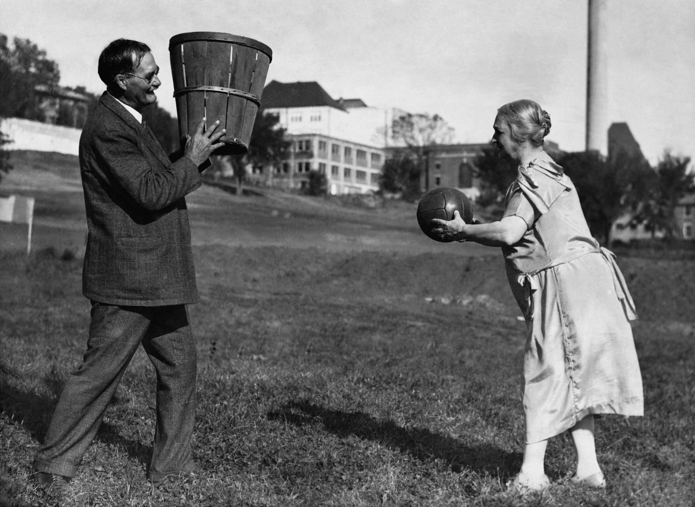
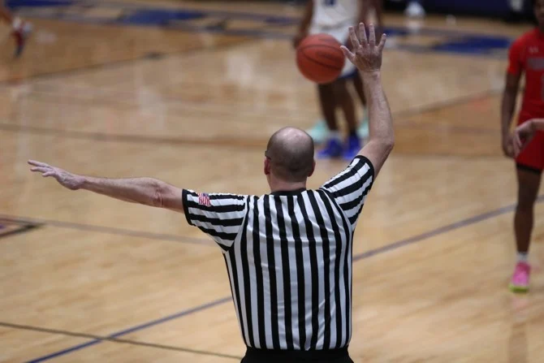
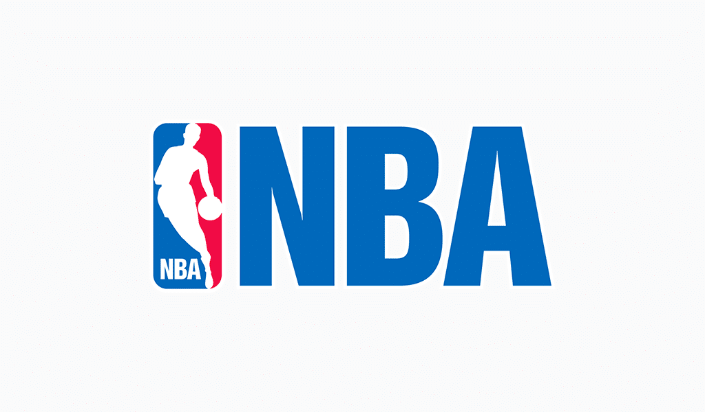
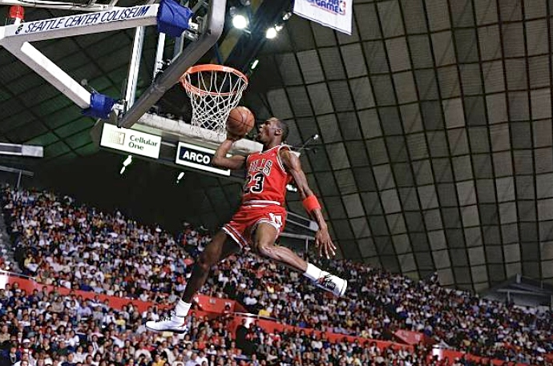
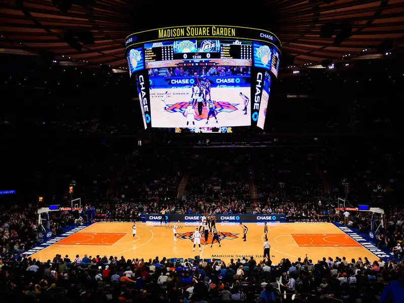

Geschichte des Basketballs

Basketball wurde 1891 von Dr. James Naismith in Springfield, Massachusetts, erfunden. Ziel war es, eine Indoor-Sportart für die Wintermonate zu schaffen. Anfangs wurde mit einem Fußball und zwei Pfirsichkörben als Körbe gespielt. Das Spiel entwickelte sich rasant weiter, insbesondere mit der Gründung der NBA im Jahr 1946, die Basketball in eine globale Sportart verwandelte. Heute gibt es Millionen von Spielern weltweit und große Turniere wie die Olympischen Spiele und die FIBA-Weltmeisterschaft.
Die Regeln des Spiels

Ein Basketballspiel besteht aus vier Vierteln, jeweils 10 Minuten (FIBA) oder 12 Minuten (NBA). Ziel ist es, den Ball durch den Korb des Gegners zu werfen. Ein normaler Wurf innerhalb der Drei-Punkte-Linie zählt zwei Punkte, ein Wurf außerhalb zählt drei. Zu den Grundregeln gehören das Dribbeln, Passen und Werfen, während Verstöße wie Doppeldribbeln oder Goaltending zu Ballverlust führen können.
Verteidigung ist ebenso entscheidend, wobei Teams sowohl Manndeckung als auch Zonenverteidigung verwenden.
Bekannte Basketball-Ligen

Die NBA (National Basketball Association) ist die bekannteste Liga der Welt und wurde 1946 gegründet. Sie hat 30 Teams und zieht die besten Spieler aus aller Welt an. In Europa ist die EuroLeague die stärkste Club-Wettbewerbsserie, während in Deutschland die Basketball-Bundesliga (BBL) als höchste nationale Liga gilt. Zudem gibt es weltweit viele bedeutende Ligen, darunter die CBA in China und die NBL in Australien.
Berühmte Basketball-Spieler

Michael Jordan gilt als der größte Basketballspieler aller Zeiten. Er gewann sechs NBA-Titel mit den Chicago Bulls und revolutionierte den Sport mit seiner Athletik und seinem Ehrgeiz. LeBron James, einer der aktuell besten Spieler, hat sich durch seine Vielseitigkeit und Führungsstärke ausgezeichnet. Kobe Bryant war bekannt für seine „Mamba-Mentalität“ und gewann fünf NBA-Meisterschaften. Neben diesen Superstars gibt es zahlreiche weitere Spieler, die den Sport geprägt haben, darunter Magic Johnson, Shaquille O’Neal und Dirk Nowitzki, der als bester europäischer Spieler der Geschichte gilt.
Vergleich der Top-Basketball-Ligen
| Liga |
Land |
Teams |
Gegründet |
| NBA |
USA |
30 |
1946 |
| EuroLeague |
Europa |
18 |
2000 |
| BBL |
Deutschland |
18 |
1966 |

Melde dich für unseren Basketball-Newsletter an!